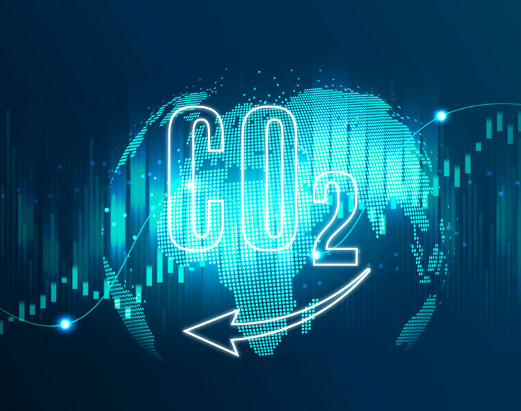

| 2050 淨零路徑 |
我國於西元 2022 年 3 月正式公布「2050 淨零排放政策路徑藍圖」，提供至 2050 年淨零之軌跡與行動路徑，以促進關鍵領域之技術、研究與創新，引導產業綠色轉型，帶動新一波經濟成長，並期盼在不同關鍵里程碑下，促進綠色融資與增加投資，確保公平與衡接過渡時期。
我國 2050 淨零排放路徑將會以「能源轉型」、「產業轉型」、「生活轉型」、「社會轉型」等四大轉型，及「科技研發」、「氣候法制」兩大治理基礎，輔以「十二項關鍵戰略」就能源、產業、生活轉型政策預期提升的重要領域制定行動計畫。
READ MORE截至西元 2021 年底，已經有 74 個國家宣布淨零排放目標，加上正在非出場聲明的國家，共有超過 197 個國家響應淨零排放，涵蓋全球約 73.8%溫室氣體排放量。多數國家訂定在 2050 年達到淨零排放，中國及印度則訂定於在 2060 年及 2070 年達到淨零排放目標。
為了達到全球的長期目標，各國應提出「國家自定貢獻」（Nationally Determined Contributions, NDCs），向國際提出其溫室氣體減量承諾，並每五年更新以落實減碳目標。
READ MORE

我國於西元 2022 年溫室氣體總排放量約為 285.97 百萬公噸二氧化碳當量（MTCO2e），扣除碳匯 21.83 MTCO2e 後，淨排放量為 264.13 MTCO2e。
總統於 2023 年 2 月 15 日公告施行《氣候變遷因應法》，明定國家溫室氣體長期減量目標為「2050 年溫室氣體淨零排放」，為落實達到長期目標，另外訂定 5 年為一期的溫室氣體排放目標。
READ MORE